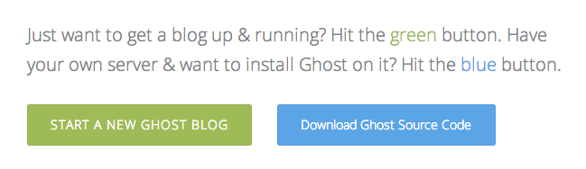

Ghost
Up and Running
Hi. I'm Matt.
Programmer.
Github: mattfield
Twitter: @mattfieldy
"Just a blogging platform"
Free. Open-source. Simple to use.
Media publication for the masses.
Story behind Ghost
or "The Ghost Story"
It started with a blog post
+1
If you build it...
Not for profit
Core tech


localhost:2368

One-click installations
Ghost hosted service